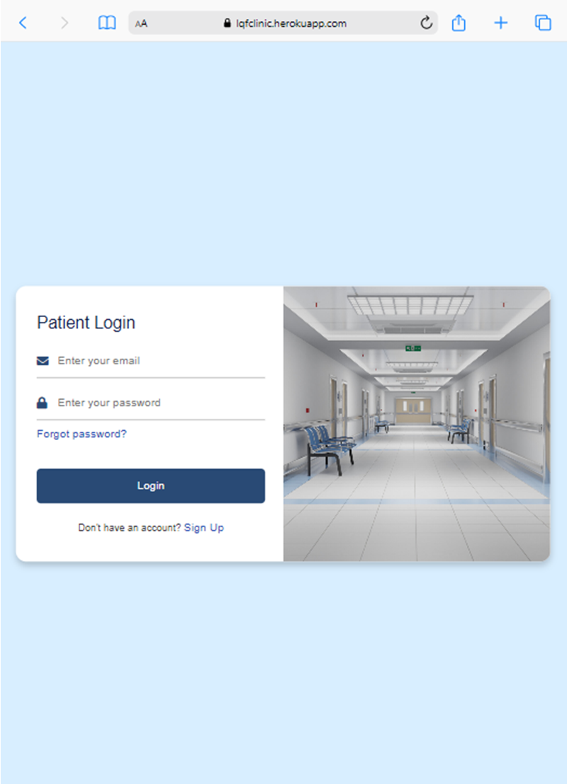
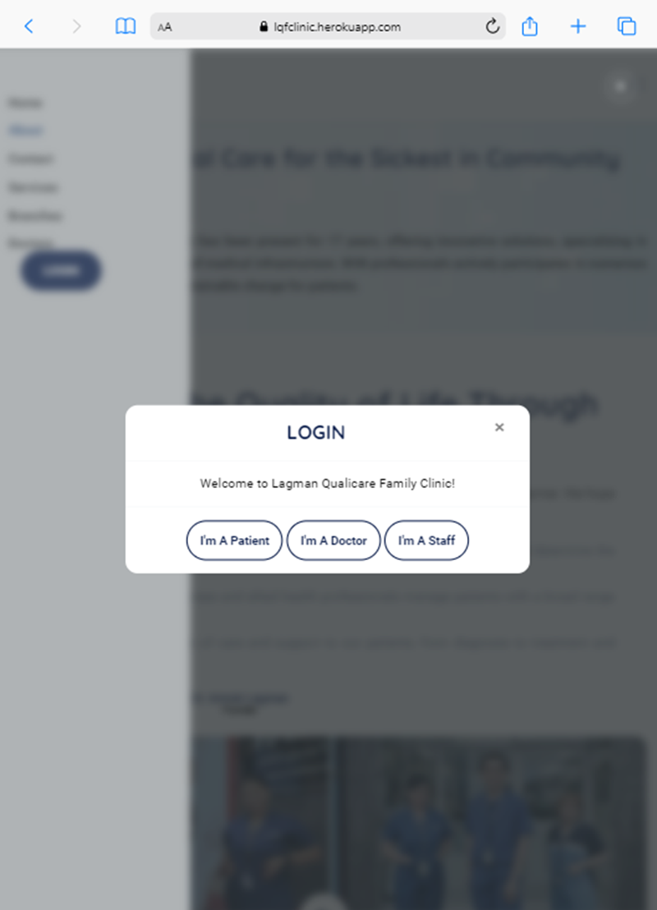
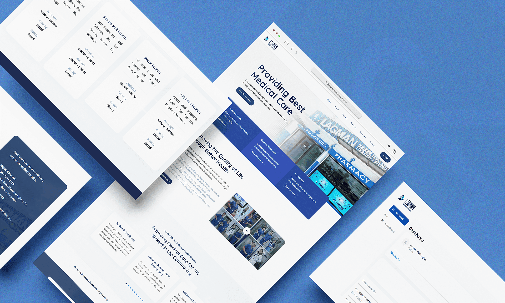
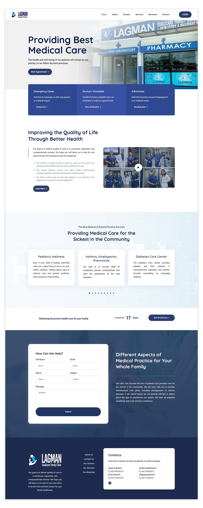

A design that's responsive for mobile and desktop, it looked to communicate the clinic's mission without compromising the usability. Following this vision, its design and identity make an approachable yet credible image of health for all. It took into consideration traditional cues of health and trust, while also exuding warmth and inclusivity for the many Filipinos who need healthcare services.

